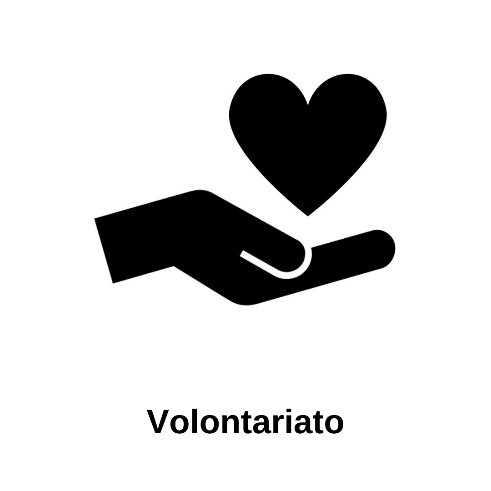

CV di Ciampaglia Ludovico
Vai al sito della scuola
Contatti
Altro
Conoscenze
informatiche
e di lingua
Volontariato

Ciampaglia Ludovico
Data di nascita: 17/12/2007
Luogo di nascita: Roma
Nazionalità: Italiana
Sesso: Maschio
Istruzione e Formazioni
Studente di ITIS indirizzo informatica e telecomunicazioni presso Galileo Galilei
Esperienza lavorativa luglio 2024: cameriere presso ristorante Picchio a Fontana di Trevi
Corso di Etica presso Universita Gregoriana
Medie: Francesco Baracca
Elementari: dal secondo al quinto anno presso la Feraironi, 1 anno alla scuola privata Cabrini